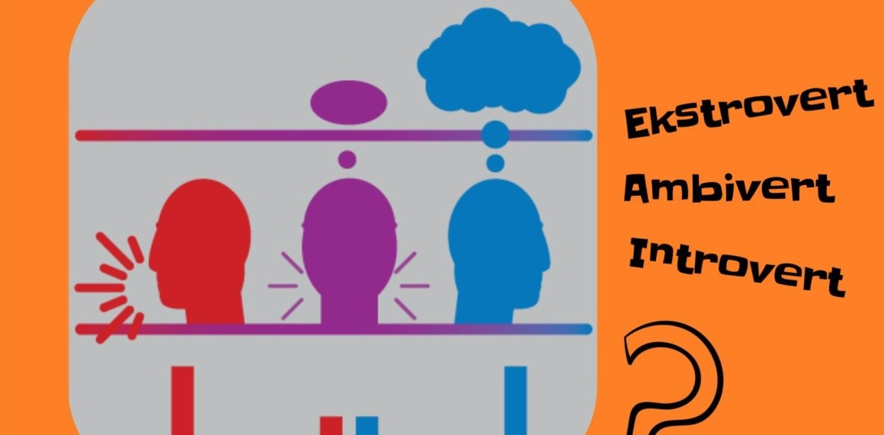

Orang yang mengkategorikan kepribadian seseorang menjadi 16 macam adalah Isabel Briggs Myers dan ibundanya, Katharine Briggs pada tahun 1960-an. Mereka menggunakan teori dari psikolog bernama Carl Jung, kemudian mengembangkan idenya untuk menciptakan kerangka tipe kepribadian yang lebih
Tapi dalam test ini kita akan melakukan test keperibadian apakah diri anda adalah seorang introvert atau ekstrovert
Sebelum Masuk dalam test ini kita akan membahas apa itu Esktrovert dan Introvert.
Introvert adalah seseorang yang bisa menyerap energi kerika sedang sendiri memilih ketenangan untuk refleksi, atau biasa lebih kita keanl orang yang menyukai menyendiri
Esktrovert adalah seseorang yang mendapatkan energi dari dunia luar, atau bisa dikatakan orang yang suka dengan sosialisasi
salah satu kepribadian manusia yang merupakan gabungan dari kepribadian Introvert dan Ekstrovet. Orang yang Ambivert suka bersosialiasi dengan orang lain, tapi dilain sisi mereka juga suka menghabiskan waktu untuk menyendiri. Berbeda dengan Ekstrovert yang suka berbicara, Ambivert cenderung pendiam pada orang yang baru dikenal. Namun jika sudah akrab, Ambivert akan berubah menjadi orang yang cerewet.
Jln.Pasir Kaliki No.25-27
Bandung
Lihat : Google Maps
Website :Binus Bandung